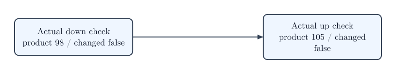
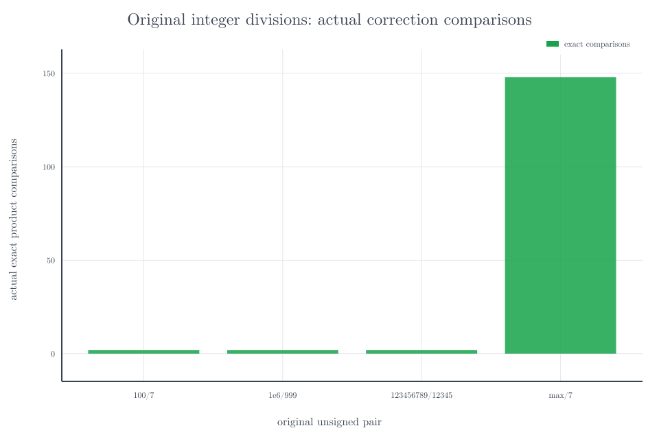
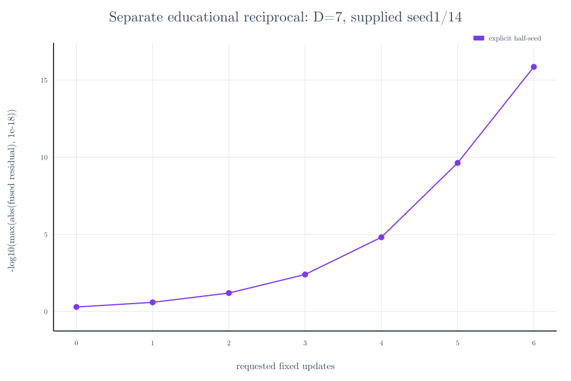
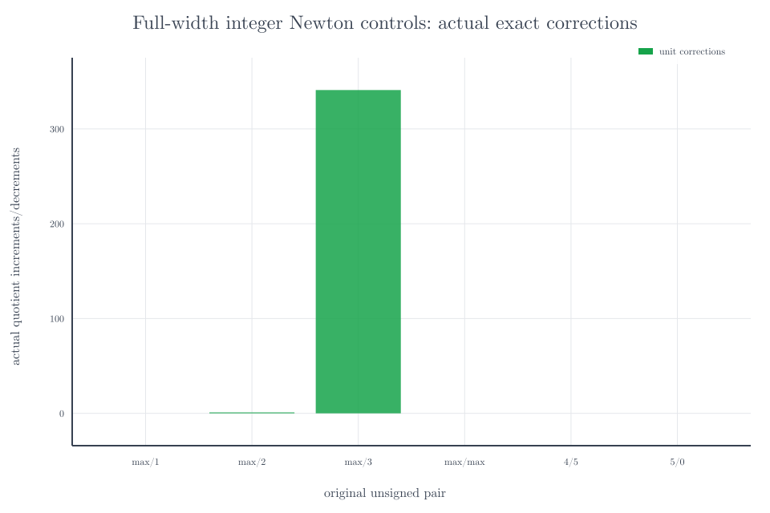

Integer Newton division: approximate, then correct exactly
Abstract
Use a floating reciprocal estimate to propose an unsigned64-bit quotient, then certify and correct it with exact wide products. The original four divisions and half-seed reciprocal experiment are retained through canonical APIs. Actual operative histories distinguish the existing five-update hardware-divide seed from the separate educational convergence example, while full-width controls cover the old conversion and increment-wrap hazards.
Exactness comes from the final inequalities
For nonzero D, quotient q and remainder r are uniquely specified by qD≤N<(q+1)D and r=N−qD. A reciprocal approximation can propose q, but those exact integer inequalities certify it. The canonical producer first corrects downward while qD>N, then upward while(q+1)D≤N. Native unsigned128 products hold the complete64-by64 values; q is promoted before adding1, including q=2⁶⁴−1.
The existing implementation is a double-reciprocal method, not the fixed-point algorithm claimed by the old prose. For N≥D>0 it computes d=double(D), initializes x=1/d with an actual floating divide and executes exactly five double updates x←x(2−d*x). The estimate double(N)*x is then converted to an integer candidate. Five updates from an already accurate division seed need not visibly improve it. No division-free whole-call, O(log operand-width) multiprecision complexity or hardware speed claim follows from this fixed64-bit routine.
A small exact correction certificate
For100/7, the final candidate14 passes14·7≤100, while15·7>100 stops upward correction. The diagram reads both actual final false comparison records from the producer. Successful correction records, when present, precede these terminating checks. The table prints exact products through the native wide formatter, never by converting them to floating values.
#include <dm/dm.hpp>
int main() {
std::filesystem::create_directories("build");
auto t = dm::algorithms::integer_newton_division_trace(100, 7);
dm::graphics::Diagram d;
std::print("| actual check index | direction | quotient before | exact tested product | changed " "candidate | quotient after |\n| ---: | --- | ---: | --- | --- | ---: |\n");
for (std::size_t i = 0; i < t.checks.size(); ++i) {
auto &c = t.checks[i];
auto product = dm::algorithms::division_wide_decimal(c.tested_product);
std::print("| {} | {} | {} | `{}` | {} | {} |\n", i,
c.downward ? "down" : "up", c.quotient_before, product,
c.changed, c.quotient_after);
d.node(std::to_string(i), {8. * i, 0},
std::format("Actual {} check\nproduct {} / changed {}",
c.downward ? "down" : "up", product, c.changed));
if (i)
d.edge(std::to_string(i - 1), std::to_string(i));
}
std::print("\nActual certified quotient {}, remainder {}.\n",
t.analysis.result.quotient, t.analysis.result.remainder);
d.save_svg("build/integer_newton_tiny.svg");
}| actual check index | direction | quotient before | exact tested product | changed candidate | quotient after |
|---|---|---|---|---|---|
| 0 | down | 14 | 98 | false | 14 |
| 1 | up | 14 | 105 | false | 14 |
Actual certified quotient 14, remainder 2.

Retain the original four unsigned divisions
The original pairs100/7,1000000/999,123456789/12345 and(2⁶⁴−1)/7 are preserved. The table checks actual quotient and remainder against built-in operators and reports actual reciprocal/correction work. The figure counts every exact comparison, including each final unsuccessful down/up test. Large dividends can require many unit corrections because a double reciprocal carries fewer significant bits than a64-bit integer; those corrections are actual producer work rather than a single assumed cleanup step.
#include <dm/dm.hpp>
int main() {
std::filesystem::create_directories("build");
std::vector<std::string> labels{"100/7", "1e6/999", "123456789/12345",
"max/7"};
std::vector<double> checks;
auto pairs = dm::algorithms::integer_newton_demo_pairs();
std::print("| dividend | divisor | actual quotient | actual remainder | built-in quotient | built-in " "remainder | actual reciprocal updates | down corrections | up corrections | exact " "comparisons |\n| ---: | ---: | ---: | ---: | ---: | ---: | ---: | ---: | ---: | ---: |\n");
for (auto[n, d] : pairs) {
auto r = dm::algorithms::integer_newton_division_analyze(n, d);
checks.push_back(r.comparison_tests);
std::print("| {} | {} | {} | {} | {} | {} | {} | {} | {} | {} |\n", n,
d, r.result.quotient, r.result.remainder, n / d, n % d,
r.reciprocal_updates, r.decrements, r.increments,
r.comparison_tests);
}
auto p = dm::graphics::RPlot::barplot(checks, labels, "exact comparisons");
p.title("Original integer divisions: actual correction comparisons").x_label("original unsigned pair").y_label("actual exact product comparisons").save_svg("build/integer_newton_original.svg");
auto t = dm::algorithms::integer_newton_division_trace(100, 7);
std::print("\nOperative rounded denominator {}, actual seed {}, actual five-update final reciprocal " "{}.\n",
t.rounded_denominator, t.seed, t.reciprocal);
}| dividend | divisor | actual quotient | actual remainder | built-in quotient | built-in remainder | actual reciprocal updates | down corrections | up corrections | exact comparisons |
|---|---|---|---|---|---|---|---|---|---|
| 100 | 7 | 14 | 2 | 14 | 2 | 5 | 0 | 0 | 2 |
| 1000000 | 999 | 1001 | 1 | 1001 | 1 | 5 | 0 | 0 | 2 |
| 123456789 | 12345 | 10000 | 6789 | 10000 | 6789 | 5 | 0 | 0 | 2 |
| 18446744073709551615 | 7 | 2635249153387078802 | 1 | 2635249153387078802 | 1 | 5 | 0 | 146 | 148 |
Operative rounded denominator 7, actual seed 0.14285714285714285, actual five-update final reciprocal 0.14285714285714285.

Preserve the original half-seed educational experiment separately
The old figure used D=7 and a deliberately halved reciprocal seed, even though the operative integer routine initializes directly at1/d. That educational experiment is retained by explicitly calling the canonical fixed-update reciprocal tracer with seed1/14 and six updates. It illustrates e_next=e² in exact arithmetic, followed by floating rounding limits. It is not presented as the integer producer’s actual initial state or stopping behavior.
The plotted value is−log10(max(abs(fused residual),10⁻¹⁸)), with a stated display floor. The residual uses fma(−7,x,1) to reduce cancellation; the actual update still uses its recorded rounded product/factor. No extra digits or iterations are invented when floating states stop changing.
#include <dm/dm.hpp>
int main() {
std::filesystem::create_directories("build");
auto t = dm::algorithms::newton_reciprocal_trace(7, 1. / 14., 6);
std::vector<double> x{0}, digits{-std::log10(std::max(
std::abs(t.initial_residual),
1e-18))};
std::print("| educational completed updates | actual reciprocal | actual fused residual |\n| ---: | " "---: | ---: |\n| 0 | {} | {} |\n",
t.seed, t.initial_residual);
for (std::size_t i = 0; i < t.steps.size(); ++i) {
auto &s = t.steps[i];
x.push_back(i + 1);
digits.push_back(-std::log10(std::max(std::abs(s.residual_after), 1e-18)));
std::print("| {} | {} | {} |\n", i + 1, s.after, s.residual_after);
}
auto p = dm::graphics::RPlot::create();
p.lines(x, digits, "explicit half-seed", {124, 58, 237}).points(
x, digits, "", {124, 58, 237}, 5).title("Separate educational reciprocal: D=7, supplied seed1/14").x_label("requested fixed updates").y_label("-log10(max(abs(fused residual), 1e-18))").save_svg("build/integer_newton_diagnostic.svg");
}| educational completed updates | actual reciprocal | actual fused residual |
|---|---|---|
| 0 | 0.07142857142857142 | 0.5 |
| 1 | 0.10714285714285714 | 0.25000000000000006 |
| 2 | 0.13392857142857142 | 0.06250000000000003 |
| 3 | 0.14229910714285715 | 0.0039062499999999445 |
| 4 | 0.14285496303013392 | 1.5258789062527756e-05 |
| 5 | 0.14285714282388134 | 2.328305881427184e-10 |
| 6 | 0.14285714285714288 | -1.3877787807814457e-16 |

Full-width conversion and correction guards
For N=2⁶⁴−1,D=1, converting N to double rounds it to2⁶⁴. Casting that floating estimate directly to uint64 is out of range. The corrected producer checks estimate≥2⁶⁴ and clamps the initial candidate to UINT64_MAX before conversion. The exact upper test then evaluates(128-bit(q)+1)·D, avoiding the old uint64(q+1) wrap that could keep the correction loop running incorrectly. Both guard decisions are captured.
The controls also include maximum dividends divided by2 and3, equal full-width operands, N<D and the historical zero-divisor sentinel. For N<D the exact shortcut returns0,N without reciprocal updates. Divisor0 preserves{0,0,0} for compatibility, with analyzed valid_divisor=false; it is not a mathematical division result.
#include <dm/dm.hpp>
int main() {
std::filesystem::create_directories("build");
auto max = std::numeric_limits<std::uint64_t>::max();
std::vector<std::pair<std::uint64_t, std::uint64_t>> pairs{{max, 1},
{max, 2},
{max, 3},
{max, max},
{4, 5}, {5, 0}};
std::vector<std::string> labels{"max/1", "max/2", "max/3", "max/max", "4/5",
"5/0"};
std::vector<double> corrections;
std::print("| control | valid divisor | estimate clamped | actual quotient/sentinel | actual " "remainder/sentinel | actual reciprocal updates | exact unit corrections |\n| --- | --- | " "--- | ---: | ---: | ---: | ---: |\n");
for (std::size_t i = 0; i < pairs.size(); ++i) {
auto[n, d] = pairs[i];
auto t = dm::algorithms::integer_newton_division_trace(n, d);
auto r = t.analysis;
corrections.push_back(r.decrements + r.increments);
std::print("| {} | {} | {} | {} | {} | {} | {} |\n", labels[i],
r.valid_divisor, t.estimate_clamped, r.result.quotient,
r.result.remainder, r.reciprocal_updates,
r.decrements + r.increments);
}
auto p =
dm::graphics::RPlot::barplot(corrections, labels, "unit corrections");
p.title("Full-width integer Newton controls: actual exact corrections").x_label("original unsigned pair").y_label("actual quotient increments/decrements").save_svg("build/integer_newton_controls.svg");
}| control | valid divisor | estimate clamped | actual quotient/sentinel | actual remainder/sentinel | actual reciprocal updates | exact unit corrections |
|---|---|---|---|---|---|---|
| max/1 | true | true | 18446744073709551615 | 0 | 5 | 0 |
| max/2 | true | false | 9223372036854775807 | 1 | 5 | 1 |
| max/3 | true | false | 6148914691236517205 | 0 | 5 | 341 |
| max/max | true | false | 1 | 0 | 5 | 0 |
| 4/5 | true | false | 0 | 4 | 0 | 0 |
| 5/0 | false | false | 0 | 0 | 0 | 0 |

Cost, ownership and interpretation
Actual word work is O(5+corrections), with constant ordinary driver storage. The optional trace owns both original operands, the five actual reciprocal records when used and every successful or unsuccessful exact correction comparison. Its logical policy counts10 fixed scalar slots plus actual update/comparison records, default1000000 and zero disabling. Admission is online before each recorded step/comparison; a quota failure returns no partial history. Exact formatting and rounded plot conversion are outside those selected counters.
The reciprocal update’s algebra explains an approximation mechanism, while exact inequalities establish the integer answer. The preserved educational half-seed example and the actual operative1/d seed now have distinct roles, and the complete-width checks make the returned result meaningful at both ends of the uint64 domain without assuming a particular hardware divider implementation.
Verification
This ten-report batch passes75 CTest cases,22 directly instrumented ASan/UBSan
cases,122 compiled and executed public examples,538/538 scoped documentation
definitions and ten representative clangd hovers. Independent Python
arbitrary-precision arithmetic verifies69365 captured division records
with656460 checks; native independent polynomial, geometry, finite-range, graph,
ranking and callback checks cover the remaining producers. Frozen valid-input
comparisons preserve Neville recurrences, Newton result/callback paths, complete
byte encodings, switch routes and NSGA-II complete objective-call
sequences/final fronts. Ten checkout headers and ten byte-identical installed
development headers compile independently; an installed-header native consumer
links and runs. All40 complete programs execute, and40 native figures have been
visually reviewed; HTML/Markdown exports preserve computed rows/prose and
identical image bytes. Checks are scoped native checks, not an installation
claim for every language binding. Receipts:
build/mepml-conversion/batch-254-263/.